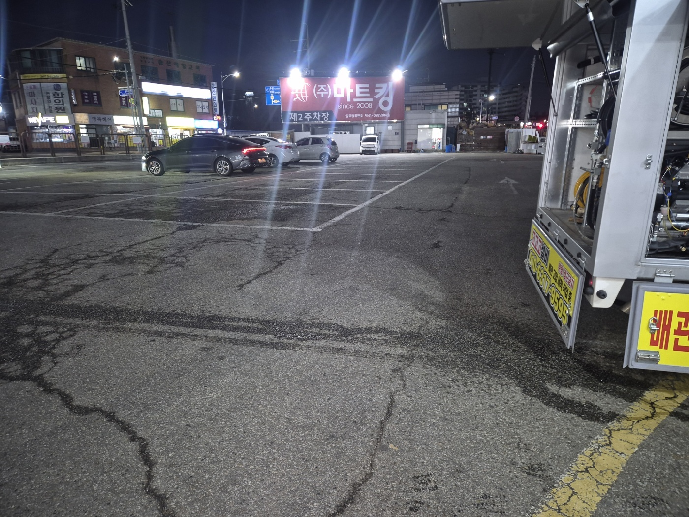
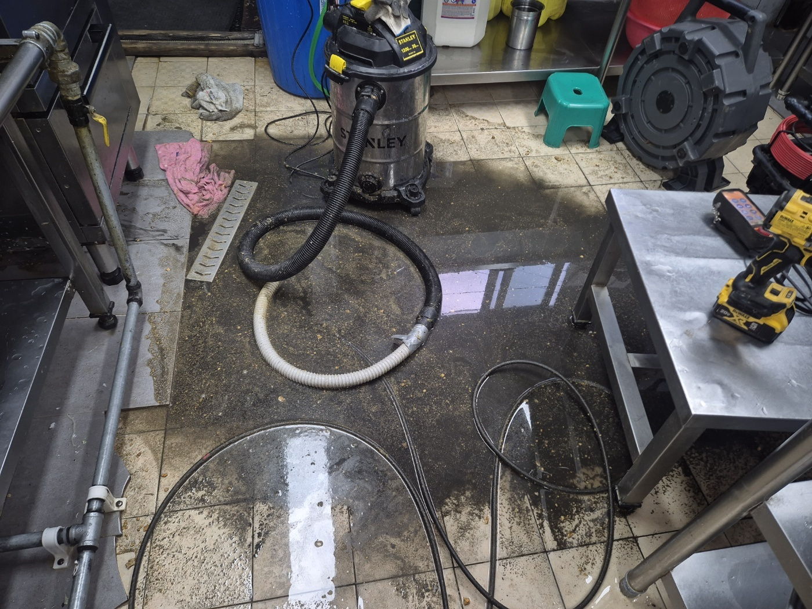
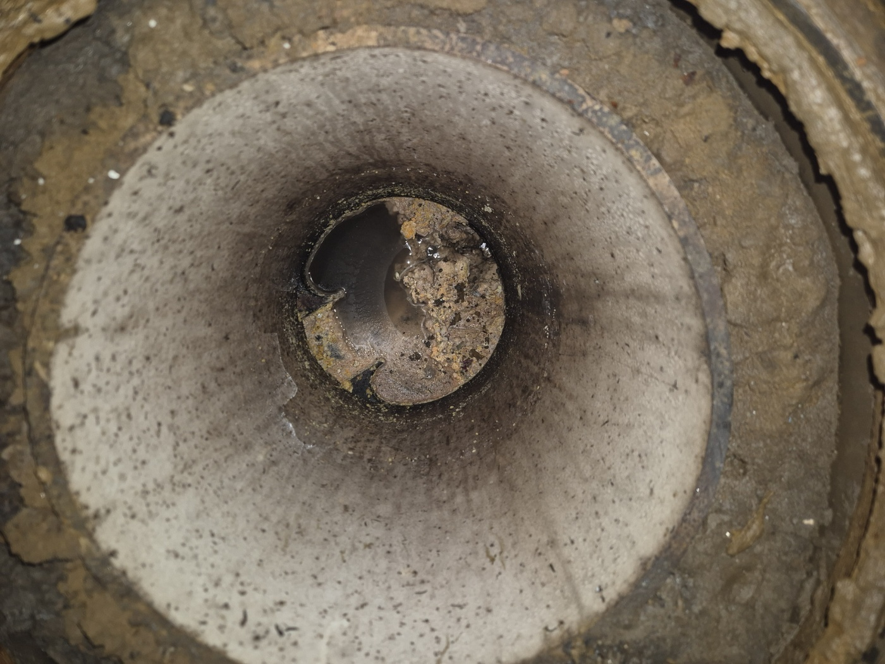
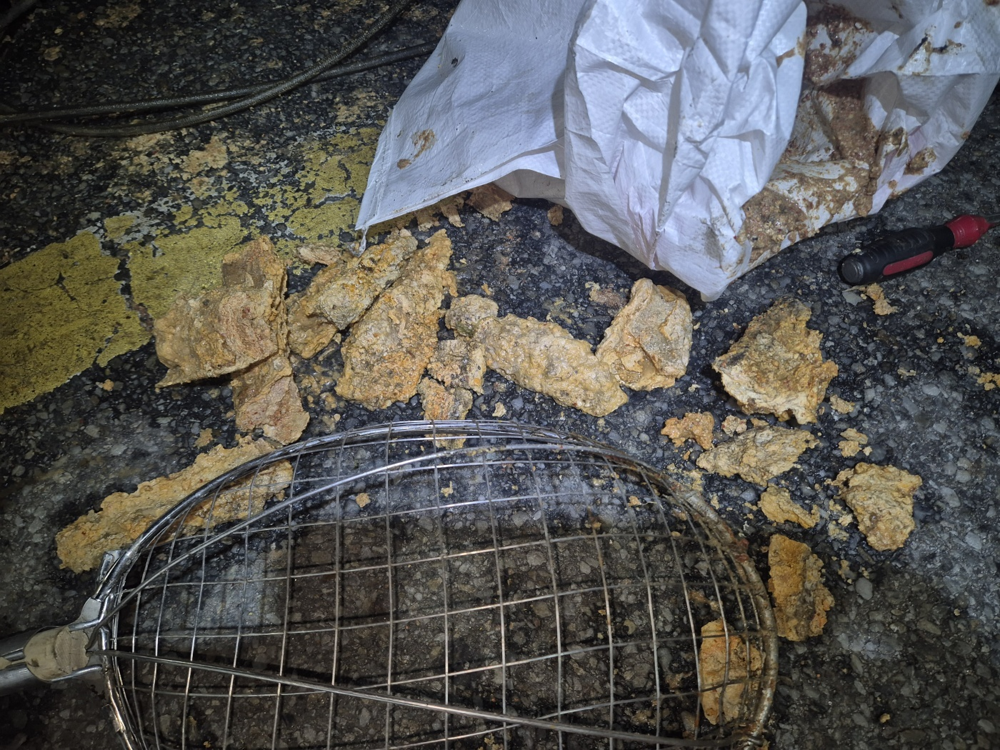

안녕하세요.. 고고고 설비입니다.. 오늘은 오산시 오산동에 있는 마트 내 식당에서 하수구막힘 신고를 받고 야간에 다녀온 현장입니다. 영업시간 중에는 손님들 통행에 방해가 될 수 있어서, 마감 시간에 맞춰 출동해달라고 요청하셨어요.
주방 바닥 배수구가 막혀서 물이 잘 안 빠지는 상태였는데, 트렌치 안쪽까지 물이 차올라 있었습니다. 영업 후 시간에 맞춰 도착해서 손님들 눈치 볼 필요 없이 바로 셕션 장비부터 준비했어요.
대형 셕션기와 고압세척 호스를 주방 바닥에 넉넉하게 펼쳐두고, 배수구 트렌치 라인부터 순서대로 작업을 시작했습니다. 마트 안쪽이라 장비를 옮기는 동선도 미리 확인해가며 진행했어요.

배관 안쪽을 확인해보니 기름때와 이물질이 뭉쳐 입구 쪽을 거의 막고 있는 상태였습니다. 식당 특성상 기름기가 배관 벽에 계속 쌓이고 굳어서, 시간이 지날수록 통로가 점점 좁아진 것으로 보였어요.

셕션과 고압세척을 함께 진행하면서 굳은 이물질을 하나씩 끄집어냈습니다. 거름망에 걸러진 덩어리만 봐도 상당한 양이었고, 한 번에 다 빠지지 않아서 몇 차례 반복해서 뚫어야 했어요.

작업을 마치고 물을 내려서 배수구가 정상적으로 빠지는 걸 확인하고 마무리했습니다. 다음 날 영업에 지장 없이 마칠 수 있어서 다행이었어요. 식당처럼 기름 사용이 많은 곳은 배수구에 거름망을 꼭 사용하고 주기적으로 청소해주시는 게 막힘을 예방하는 데 도움이 됩니다.
고고고 설비는 주택, 아파트, 원룸, 상가, 공장의 생활 하수 오수 배관을 관리해 주는 업체입니다. 고고고 설비에 전화 주시면 친절상담 정확한 진단 확실한 해결로 보답해 드리겠습니다!!